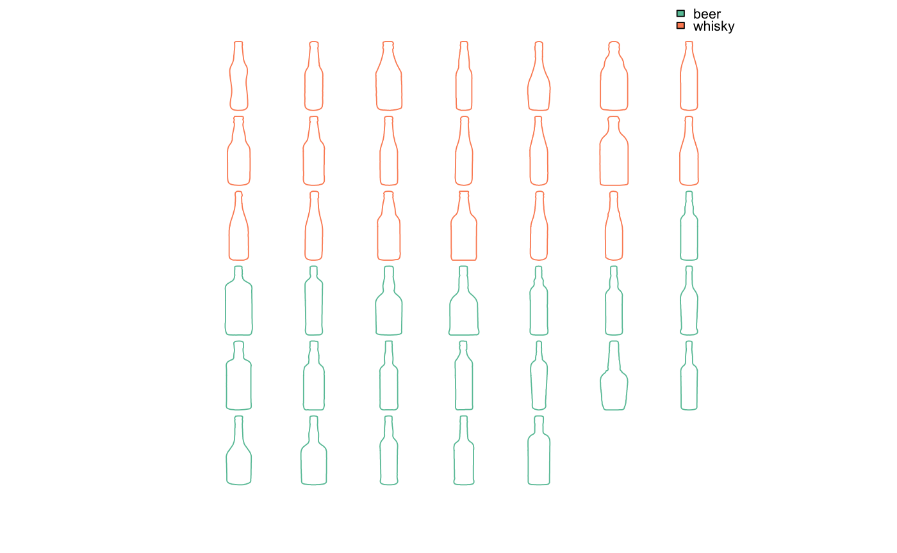
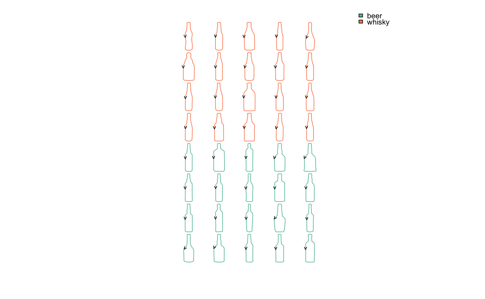

Plots mosaics of shapes.
Will soon replace panel. See examples and vignettes.
mosaic_engine(coo_list, dim, asp = 1, byrow = TRUE, fromtop = TRUE, sample = 60, relatively = FALSE, template_size = 0.92) mosaic(x, ...) # S3 method for Out mosaic(x, f, relatively = FALSE, pal = pal_qual, sample = 60, paper_fun = paper_white, draw_fun = draw_outlines, legend = TRUE, dim = NA, asp = 1, byrow = TRUE, fromtop = TRUE, ...) # S3 method for Opn mosaic(x, f, relatively = FALSE, pal = pal_qual, sample = 60, paper_fun = paper_white, draw_fun = draw_curves, legend = TRUE, dim = NA, asp = 1, byrow = TRUE, fromtop = TRUE, ...) # S3 method for Ldk mosaic(x, f, relatively = FALSE, pal = pal_qual, sample = 60, paper_fun = paper_white, draw_fun = draw_landmarks, legend = TRUE, dim = NA, asp = 1, byrow = TRUE, fromtop = TRUE, ...)
Arguments
| coo_list |
|
|---|---|
| dim |
|
| asp |
|
| byrow |
|
| fromtop |
|
| sample |
|
| relatively |
|
| template_size |
|
| x | any Coo object |
| ... | additional arguments to feed the main drawer
if the number of shapes is > 1000 (default: 64).
If non-numeric (eg |
| f | factor specification to feed fac_dispatcher |
| pal | one of palettes |
| paper_fun | a papers function (default: |
| draw_fun | one of drawers for |
| legend |
|
Value
a list of templated and translated shapes
See also
Other grindr: drawers, layers,
papers, pile,
plot_PCA
Examples
# On Out --- bot %>% mosaicbot %>% mosaic(~type)# As with other grindr functions you can continue the pipe bot %>% mosaic(~type, asp=0.5) %>% draw_firstpoint# On Opn ---- same grammar olea %>% mosaic(~view+var, paper_fun=paper_dots)# On Ldk mosaic(wings, ~group, pal=pal_qual_Dark2, pch=3)# On Out with different sizes # would work on other Coo too shapes2 <- shapes sizes <- runif(30, 1, 2) shapes2 %>% mosaic(relatively=FALSE)